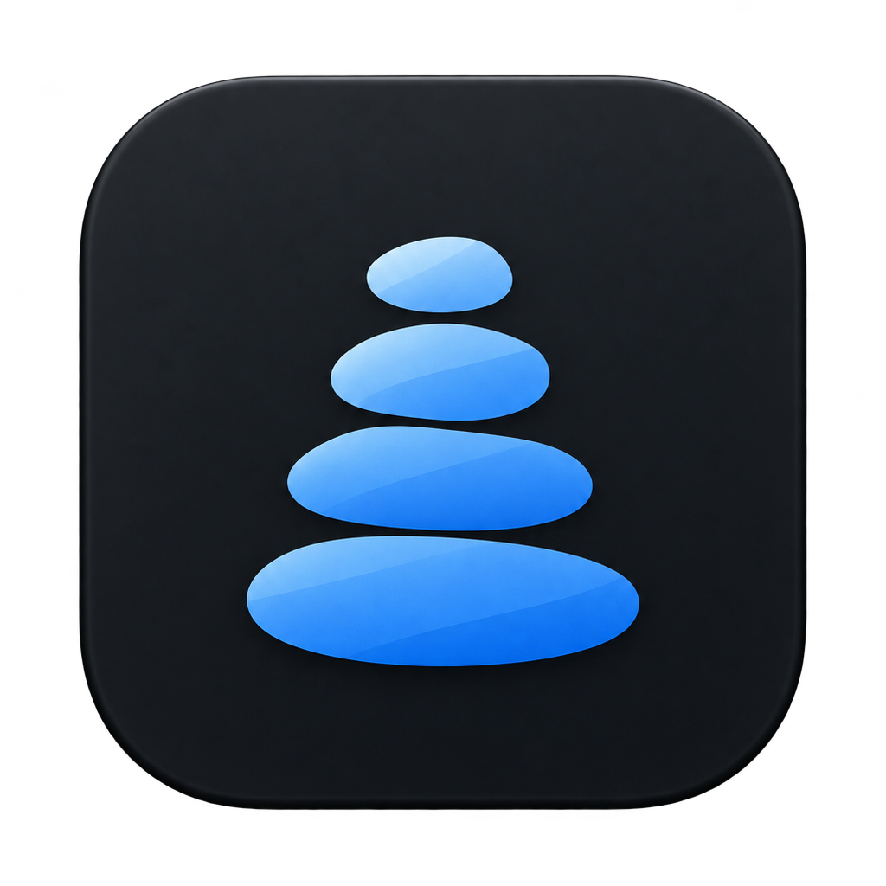

macOS 14+
The native app targets macOS Sonoma 14.0 and later. Feature availability can also depend on the macOS version and permissions.
Cairn for macOS
Cairn is in development. There is no signed, notarised public download available yet.

In development
macOS 14 or later
Apple silicon and Intel build targets
Compatibility targets are not a completed hardware acceptance test.
The target
The native app targets macOS Sonoma 14.0 and later. Feature availability can also depend on the macOS version and permissions.
The build pipeline targets both architectures. A universal build alone does not certify every supported Mac or cleanup path.
Full Disk Access allows measurement of some protected app data. Missing access can mean incomplete results. Read the reason before granting access.
Before a public download
Signed & notarised packageNot published
Supported-Mac acceptanceStill to complete
Safety review of experimental pathsIn progress
Live licensing & purchase flowNot verified
Public update deliveryNot configured
Local and continuous-integration builds are development artifacts. They are not a public release, and an expiring artifact is not a supported download.
When a release is ready, this page should identify the version, requirements, verified download and release notes. For now, the app screenshots are previews with sample data.
Read development updatesGet familiar
For the work ahead
Understand the workflow before deciding what goes.